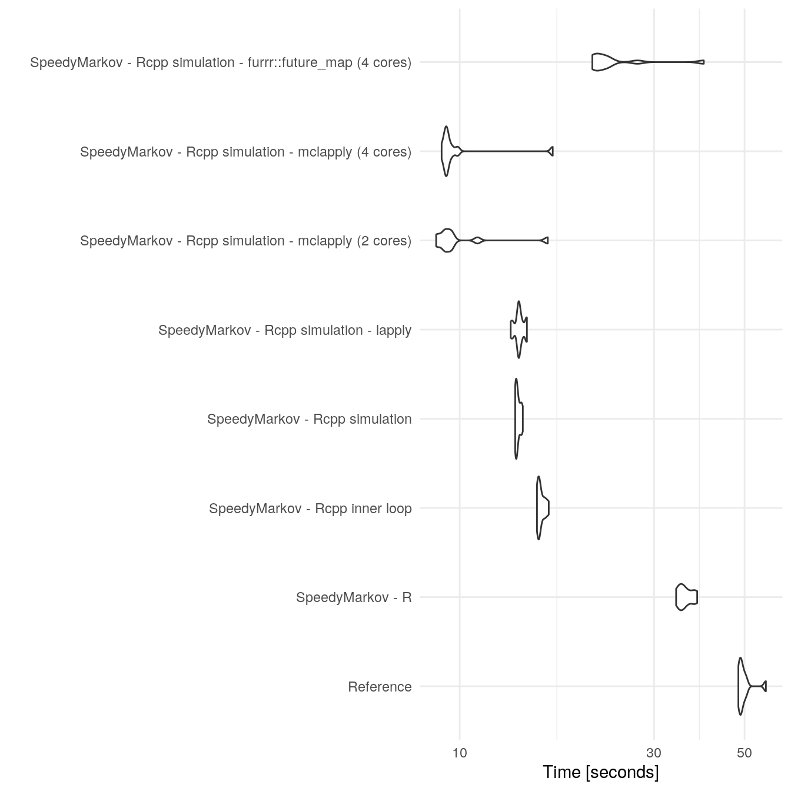

vignettes/benchmarking.Rmd
benchmarking.Rmdlibrary(SpeedyMarkov)
library(ggplot2)
library(microbenchmark)
library(parallel)
library(furrr)
#> Loading required package: future
# Set up grid to be used across models
# Not in Rstudio future currently defaults to multisession rather than multicore which may be slower.
benchmark_approaches <- function(model = NULL, reference = NULL,
duration = NULL, samples = NULL,
times = NULL) {
## Start up parallel sessions
future::plan(future::multiprocess, workers = 4);
benchmark <- microbenchmark::microbenchmark(
"Reference" = {
reference(cycles = duration, samples = samples)
},
"SpeedyMarkov - R" = {
markov_ce_pipeline(model(),
duration = duration,
samples = samples,
sim_type = "base")
},
"SpeedyMarkov - Rcpp inner loop" = {
markov_ce_pipeline(model(),
duration = duration,
samples = samples,
sim_type = "armadillo_inner")
},
"SpeedyMarkov - Rcpp simulation" = {
markov_ce_pipeline(model(),
duration = duration,
samples = samples,
sim_type = "armadillo_all")
},
"SpeedyMarkov - Rcpp simulation - lapply" = {
markov_ce_pipeline(model(),
duration = duration,
samples = samples,
sim_type = "armadillo_all",
map_fn = lapply)
},
"SpeedyMarkov - Rcpp simulation - mclapply (2 cores)" = {
markov_ce_pipeline(model(),
duration = duration,
samples = samples,
sim_type = "armadillo_all",
map_fn = parallel::mclapply,
mc.cores = 2)
},
"SpeedyMarkov - Rcpp simulation - mclapply (4 cores)" = {
markov_ce_pipeline(model(),
duration = duration,
samples = samples,
sim_type = "armadillo_all",
map_fn = parallel::mclapply,
)
},
"SpeedyMarkov - Rcpp simulation - furrr::future_map (4 cores)" = {
markov_ce_pipeline(model(),
duration = duration,
samples = samples,
sim_type = "armadillo_all",
map_fn = furrr::future_map)
},
times = times)
return(benchmark)
}Run the benchmarks for the two state model for 100 cycles, across 100,000 samples, 10 times for each test.
## Specifiy the number of samples and duration over which to model
## Specfiy the reference and SpeedyMarkov model
results <- benchmark_approaches(model = example_two_state_markov,
reference = reference_two_state_markov,
duration = 100, samples = 100000,
times = 10)
#> Warning: [ONE-TIME WARNING] Forked processing ('multicore') is disabled
#> in future (>= 1.13.0) when running R from RStudio, because it is
#> considered unstable. Because of this, plan("multicore") will fall
#> back to plan("sequential"), and plan("multiprocess") will fall back to
#> plan("multisession") - not plan("multicore") as in the past. For more details,
#> how to control forked processing or not, and how to silence this warning in
#> future R sessions, see ?future::supportsMulticore
results
#> Unit: seconds
#> expr min
#> Reference 48.286735
#> SpeedyMarkov - R 33.970129
#> SpeedyMarkov - Rcpp inner loop 15.477119
#> SpeedyMarkov - Rcpp simulation 13.685052
#> SpeedyMarkov - Rcpp simulation - lapply 13.340309
#> SpeedyMarkov - Rcpp simulation - mclapply (2 cores) 8.755086
#> SpeedyMarkov - Rcpp simulation - mclapply (4 cores) 9.029243
#> SpeedyMarkov - Rcpp simulation - furrr::future_map (4 cores) 21.158577
#> lq mean median uq max neval
#> 48.636534 49.90667 49.130875 50.104516 56.41664 10
#> 34.726568 35.82029 35.412119 37.349831 38.26283 10
#> 15.606255 15.82580 15.661494 16.071459 16.53874 10
#> 13.733093 13.89391 13.792935 14.084883 14.28617 10
#> 13.891131 14.01299 13.983805 14.251461 14.62035 10
#> 9.165411 10.12773 9.352307 9.587041 16.44921 10
#> 9.238362 10.10568 9.291403 9.571881 16.91814 10
#> 21.480449 24.37814 22.409852 23.309384 39.71427 10Plot benchmark results
ggplot2::autoplot(results) +
ggplot2::theme_minimal()
#> Coordinate system already present. Adding new coordinate system, which will replace the existing one.